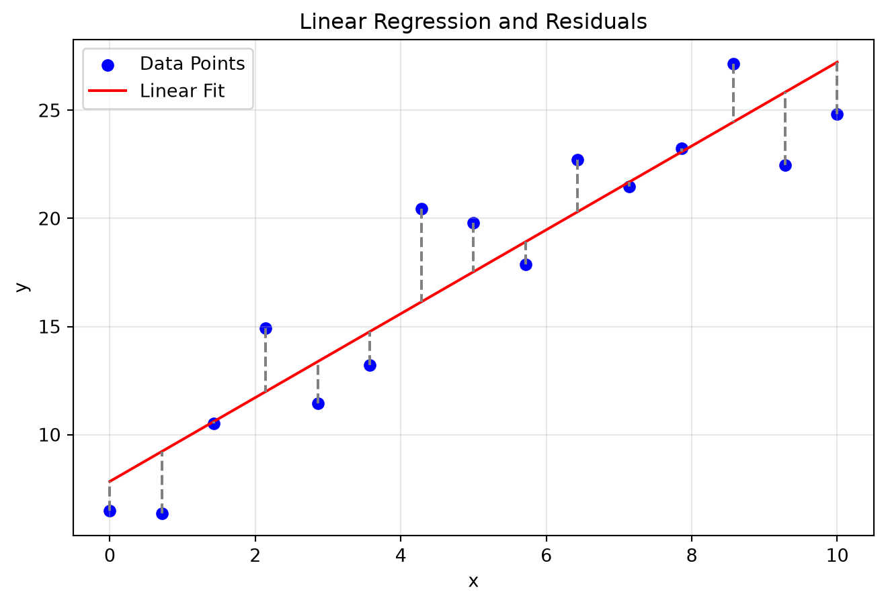

In physical sciences and engineering, we frequently encounter experimental data containing noise or random errors. Unlike interpolation, where we seek a function that passes exactly through every data point, curve fitting aims to find a mathematical function that captures the general trend of the data without necessarily passing through any specific point.
Curve fitting is crucial for: - Calibrating instruments - Validating theoretical models against experimental data - Extracting physical constants (e.g., determining the decay constant from radioactive decay data, or Planck’s constant from photoelectric effect experiments) - Predicting future behavior from past trends
This module explores the principles of least squares regression, starting from simple linear models to polynomial and nonlinear fits, and discusses the fundamental trade-off between underfitting and overfitting.
Theory
Interpolation vs. Curve Fitting
Interpolation: The approximating function \(f(x)\) matches the data exactly: \(f(x_i) = y_i\) for all \(i = 1, \dots, n\). It assumes data is exact and error-free.
Curve Fitting (Regression): The function \(f(x)\) does not necessarily pass through any \(y_i\). Instead, it minimizes the discrepancy between the data and the model. This is used when data contains uncertainty or noise.
Least Squares Regression
Suppose we have \(n\) data points \((x_1, y_1), (x_2, y_2), \dots, (x_n, y_n)\). We want to fit a model function \(f(x)\) with some parameters.
The residual (or error) at the \(i\)-th point is the difference between the observed value and the model’s predicted value: \[ e_i = y_i - f(x_i) \]
The Method of Least Squares seeks to find the parameters of \(f(x)\) that minimize the sum of the squares of the residuals: \[ S_r = \sum_{i=1}^n e_i^2 = \sum_{i=1}^n (y_i - f(x_i))^2 \]
Linear Regression
For a straight line model, \(f(x) = a_0 + a_1 x\), where \(a_0\) is the intercept and \(a_1\) is the slope. The sum of squared errors is: \[ S_r = \sum_{i=1}^n (y_i - a_0 - a_1 x_i)^2 \]
To minimize \(S_r\), we take the partial derivatives with respect to \(a_0\) and \(a_1\) and set them to zero: \[ \frac{\partial S_r}{\partial a_0} = -2 \sum_{i=1}^n (y_i - a_0 - a_1 x_i) = 0 \]\[ \frac{\partial S_r}{\partial a_1} = -2 \sum_{i=1}^n x_i(y_i - a_0 - a_1 x_i) = 0 \]
Rearranging these yields the Normal Equations: \[ n a_0 + \left(\sum x_i\right) a_1 = \sum y_i \]\[ \left(\sum x_i\right) a_0 + \left(\sum x_i^2\right) a_1 = \sum x_i y_i \]
Solving this system gives the formulas for the slope and intercept: \[ a_1 = \frac{n \sum x_i y_i - \sum x_i \sum y_i}{n \sum x_i^2 - (\sum x_i)^2} \]\[ a_0 = \bar{y} - a_1 \bar{x} \] where \(\bar{x}\) and \(\bar{y}\) are the sample means of \(x\) and \(y\).
Coefficient of Determination (\(R^2\))
To quantify the goodness of fit, we use the coefficient of determination, \(R^2\): \[ R^2 = \frac{S_t - S_r}{S_t} \] where \(S_t = \sum (y_i - \bar{y})^2\) is the total sum of squares (variance of the data around its mean), and \(S_r\) is the residual sum of squares. \(R^2\) ranges from \(0\) to \(1\), where \(1\) indicates a perfect fit.
Polynomial Regression
To fit a polynomial of degree \(m\), \(f(x) = a_0 + a_1 x + a_2 x^2 + \dots + a_m x^m\). The residual sum of squares is \(S_r = \sum_{i=1}^n (y_i - \sum_{j=0}^m a_j x_i^j)^2\). Taking partial derivatives with respect to each \(a_k\) yields a system of \(m+1\) normal equations, which can be written in matrix form as: \[ \begin{bmatrix} n & \sum x_i & \dots & \sum x_i^m \\ \sum x_i & \sum x_i^2 & \dots & \sum x_i^{m+1} \\ \vdots & \vdots & \ddots & \vdots \\ \sum x_i^m & \sum x_i^{m+1} & \dots & \sum x_i^{2m} \end{bmatrix} \begin{bmatrix} a_0 \\ a_1 \\ \vdots \\ a_m \end{bmatrix} = \begin{bmatrix} \sum y_i \\ \sum x_i y_i \\ \vdots \\ \sum x_i^m y_i \end{bmatrix} \]
Nonlinear Regression & Linearization
Many physical processes follow non-linear models like exponential decay or power laws. We can often transform these into linear models.
Exponential Model: \(y = \alpha e^{\beta x}\) Taking the natural logarithm of both sides: \[ \ln y = \ln \alpha + \beta x \] This is a linear equation \(Y = a_0 + a_1 X\) where \(Y = \ln y\), \(X = x\), \(a_0 = \ln \alpha\), and \(a_1 = \beta\).
Power Model: \(y = \alpha x^{\beta}\) Taking the base-10 logarithm: \[ \log y = \log \alpha + \beta \log x \] This is linear where \(Y = \log y\), \(X = \log x\), \(a_0 = \log \alpha\), and \(a_1 = \beta\).
Overfitting and Underfitting
Underfitting: Choosing a model that is too simple (e.g., a line for quadratic data). It fails to capture the underlying physics.
Overfitting: Choosing a model that is too complex (e.g., a high-degree polynomial for sparse, noisy data). It fits the noise rather than the signal and performs poorly on new data.
Geometric/Visual Explanation
import numpy as npimport matplotlib.pyplot as pltnp.random.seed(42)x = np.linspace(0, 10, 15)y =2.5* x +5+ np.random.normal(0, 3, size=len(x))# Linear fitcoeffs = np.polyfit(x, y, 1)y_fit = np.polyval(coeffs, x)plt.figure(figsize=(8, 5))plt.scatter(x, y, color='blue', label='Data Points')plt.plot(x, y_fit, color='red', label='Linear Fit')# Draw residualsfor i inrange(len(x)): plt.plot([x[i], x[i]], [y[i], y_fit[i]], color='gray', linestyle='--')plt.title('Linear Regression and Residuals')plt.xlabel('x')plt.ylabel('y')plt.legend()plt.grid(True, alpha=0.3)plt.show()

Figure 1: Scatter plot with linear regression line and residuals.
Problem: The activity \(A\) of a radioactive isotope is measured over time \(t\). Fit an exponential curve \(A(t) = A_0 e^{-\lambda t}\) to the data using linearization. Determine \(A_0\) and the decay constant \(\lambda\).
Problem: Heat capacity \(C_p\) of a gas is measured at various temperatures \(T\). Compare linear, quadratic, and cubic fits, compute \(R^2\) for each, and identify the most appropriate model.
Conclusion: - The linear model has an \(R^2\) around 0.94, which is decent but shows systematic deviation. - The quadratic model has an \(R^2\) of nearly 1.00000, indicating an excellent fit. - The cubic model marginally improves the fit over the quadratic, but the improvement is minimal. Because physical laws (like the empirical Shomate equation for heat capacity) typically rely on lower-order polynomials and we wish to avoid overfitting, the quadratic model is the most appropriate and parsimonious choice.
Practice Problems
Linear Regression: Fit a straight line to the data points \((1, 1), (2, 1.5), (3, 2.8), (4, 3.5), (5, 4.1)\). Compute the slope, intercept, and the \(R^2\) value.
Power Law Fit: The current \(I\) through a non-ohmic device varies with voltage \(V\) according to \(I = C V^n\). Use linearization to determine \(C\) and \(n\) given the data: \((V, I) = (1, 0.5), (2, 1.7), (3, 3.8), (4, 6.7), (5, 10.3)\).
Saturation Growth Rate: The specific growth rate \(\mu\) of a bacteria follows Monod kinetics: \(\mu = \frac{\mu_{max} S}{K_s + S}\). By taking the reciprocal, \(\frac{1}{\mu} = \frac{K_s}{\mu_{max}} \frac{1}{S} + \frac{1}{\mu_{max}}\) (Lineweaver-Burk plot). Fit this linear model to determine \(\mu_{max}\) and \(K_s\) for provided experimental data.
Polynomial Fitting: Using a programming language of choice, write a function that takes arrays \(X\) and \(Y\) and computes the normal equations matrix for a cubic polynomial, solving it using a linear algebra solver (e.g., np.linalg.solve).
Overfitting Analysis: Create a dataset of 10 points generated from a quadratic function plus random noise. Fit polynomials of degree 2, 5, and 9 to this data. Plot the results and explain the behavior of the degree 9 polynomial between the data points.
Summary
NoteKey Takeaways
Interpolation vs. Curve Fitting: Interpolation matches data exactly; curve fitting minimizes error to find trends in noisy data.
Least Squares Principle: The best fit is achieved by minimizing the sum of the squared residuals \(S_r = \sum (y_i - f(x_i))^2\).
Goodness of Fit (\(R^2\)): Measures the proportion of variance in the dependent variable explained by the model. Values close to 1 indicate a good fit.
Linearization: Non-linear models like \(y = \alpha e^{\beta x}\) can be transformed into linear forms using logarithms to apply standard least squares techniques.
Underfitting/Overfitting: Balancing model complexity is critical. Overly complex models fit noise instead of physics, reducing predictive power.